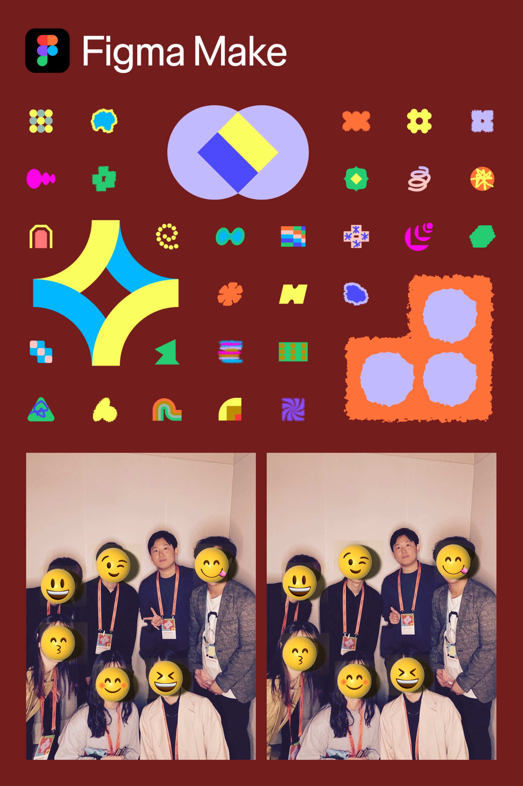
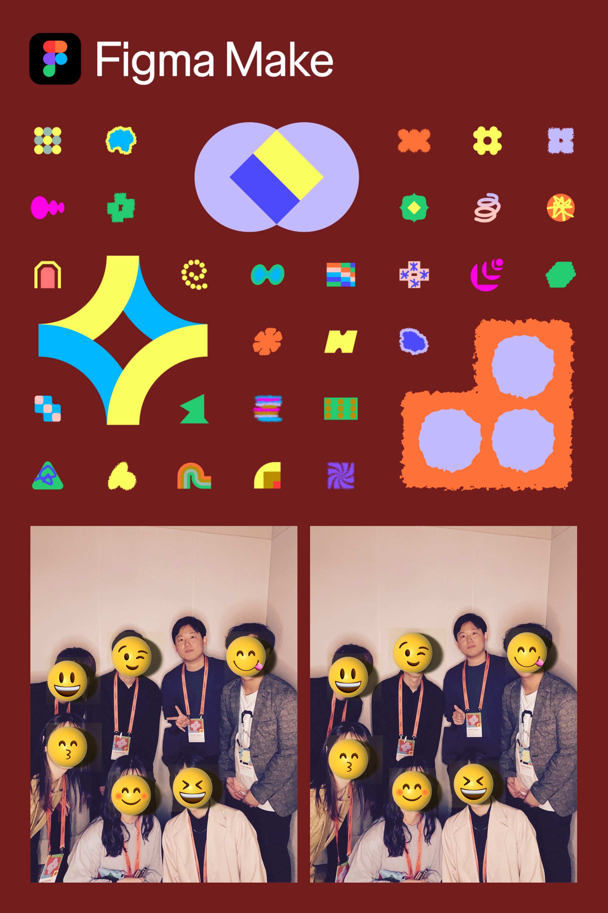

🎨 【イベントレポ】Figma完全招待制イベント潜入！
AI全盛期、私たちの仕事はどう変わる？
Maker Collective Tokyo: Happy Hour 参加報告
1イントロダクション：パリピの圧を越えて
今までもFigmaのイベントには何度か参加してきましたが、今回はなんと完全招待制。本来は一緒にUX推進の取り組み行っている吾田MGと参加予定だったのですが、当日はまさかの体調不良により欠席（※現在はすっかり回復して元気です笑）。というわけで、心細さを抱えつつ単身で渋谷の会場（TRUNK(HOTEL) CAT STREET）へ乗り込みました。
会場に着くと、すぐ隣のイベントスペースがクラブ仕様になっており、とんでもない「パリピの圧」を感じながらの入場となりましたが（笑）、会場内は熱心なデザイナーやエンジニア、PMで満員でした！🎉
2AI時代、デザイナーは不要になるのか？Figmaセッション
今回のメインテーマはズバリ、「AIがプロダクト開発をどう変革するのか」。
最初のセッションはFigmaのプロダクトリーダーによるものでした。全編英語でしたが、なんとリアルタイムAI翻訳で内容はバッチリ理解できました（ここでもAIの凄さを実感...！）。
💡 一番印象に残ったポイント
「AIによって誰もがデザインできる世の中になる」という話です。「AIがやるならデザイナーはいらない？」と思いきや、逆でした。開発効率が上がり、爆速でシステムが作れるようになるからこそ、他社と差別化する要素として「見やすいUI」や「使いやすいUX」が今まで以上に重要になるとのこと。
これ、今のYSDにとっても非常に耳の痛い、けれど重要な話だと感じました。
YSDの現場「あるある」
正直、今のYSDの現場「あるある」ですが…お客様との要件定義、エクセルやパワポの資料だけで進めていませんか？「文字」と「図形」だけで仕様を固めてしまうので、お客様も私たちも完成形のイメージが湧かないまま仕様決定してしまいがちです。
特にYSDはウォーターフォール型の開発が主流です。上流工程でイメージのすり合わせができていないと、開発が進���でから「やっぱりイメージと違う」「使いにくい」という変更が発生します。この「手戻り」ほど非効率で辛いものはありませんよね…。また、文字ベースの仕様書では機能の有無は確認できても、「実際に使いやすいか（UX）」という視点はどうしても抜け落ちてしまいます。
🚀 AIがもたらす未来
もし、PMやPL、ひいては担当職の方までAIを使ってサクッと具体的なイメージ（プロトタイプ）を作れるようになったら？お客様と一緒に画面を操作しながら「これこれ！」と会話できるようになれば、手戻りも激減し、UXも担保された品質の高いシステムになるはずです。
AIは私たちの仕事を奪うのではなく、デザインの裾野を広げ、全員で「本当に使えるもの」を作るための武器になるんです。
3衝撃！新卒1年目が語る「爆速検証」プロセス三菱電機セッション
続いて驚かされたのが、三菱電機さんの事例です。デザインシステム「Serendie」を活用し、検証プロセスを劇的に短縮した実績が紹介されました。
この数字、すごくないですか？Figma Makeなどを活用して、アイデアを即座に動くプロトタイプにし、すぐに検証する。YSDのサービスプロダクト部でも一部活用が始まっていますが、このスピード感はぜひ全社で真似したいところです。
そして何より衝撃だったのが、この堂々たるプレゼンをしていたのが新卒1年目の社員さんだったこと！😲
会場には名だたる企業の重鎮が200名ほどいましたが、その中で物怖じせず話すバイタリティに感動しました。私も負けていられません...！

4「とりあえずAIに書かせろ」の失敗から学ぶSansanセッション
最後はSansan株式会社さん。こちらはなんと「LLM Week」と題して、1週間無理やりAIにコーディングさせるというスパルタな取り組み（笑）を紹介していました。
結果はどうだったと思いますか？
実は...「大量の手戻りが発生して上手くいかなかった」そうです（orz...）。
原因は、「設計や要件が固まっていないままAIに書かせたから」。
ここからの学びは、「手戻りをなくすには、上流工程での認識合わせが命」だということ。
これを聞いて、「あ、これ進研ゼミ（UXユニット）でやったところだ！」と思いました。💪
私たちUXユニットが進めている「FigJamで認識を合わせ、Figmaですぐに具体化し、手戻りをなくす」というアプローチ。これがまさに、AI時代に求められている「正解」のプロセスだったんです。
他社の失敗と成功の事例を聞いて、「私たちがやろうとしていることは間違っていない！」と大きな自信を持ち帰ることができました。

5憧れのチームと交流！刺激的なHappy Hour
セッション後の交流会（Happy Hour）では、美味しいお酒や、なんとキャビアまで振る舞われました！（さすがFigma、オシャレすぎます...笑）🍾✨
そんな豪華な空間で、他社のUX/UI担当者の方々と「あるある話」で盛り上がりました。特に嬉しかったのが、有名なデザインシステムであるCyberAgentさんの「Spindle」や、DMM.comさんの「Turtle Design System」を作っているチームの方々とお話しできたこと！
最前線で活躍されている皆さんと意見交換をし、一緒に写真も撮らせていただきました。（ミニプリクラ機みたなやつが…!）社内でデザインシステムの構築や浸透に奮闘している同志として、本当に多くの刺激をもらいました。
 


6最後に：Coknock鋭意構築中！
他社の事例に負けじと、YSDでもグループシステム部内にUXユニットを立ち上げ、人材育成チームと強力に協力し、全社へのUX向上に向けた取り組みやデザインシステム「Coknock（コノック）」を絶賛構築中です！🚀
これまでのYSDの開発知見やブランドを集約しつつ、「新しさ」と「使いやすさ」を徹底的に意識して作り込んでいます。
一緒にYSDのUX/UIを変革しませんか？
- 「Figmaを使って、爆速で画面を作ってみたい！」
- 「FigJamを使って、会議をもっと効率化したい！」
- 「とりあえずAI×デザインの話を聞いてみたい」
そんな方がいれば、ぜひお気軽にUXユニットまでお声がけください。
YSDのUX/UI浸透を、ぜひ最前線で一緒にやっていきましょう！！